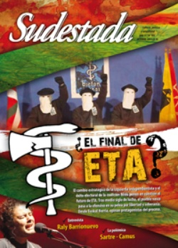

Buscar
Pepino Fernández, líder de la UTD Mosconi: "Con presión, hasta el más duro cae"
Justiciero social desde la primera hora, Pepino, ex petrolero, conocedor de casi todas las cárceles del norte argentino, enfrentó gobiernos y enormes empresas con el apoyo de todo el pueblo de Mosconi. Una lección de poder popular sin recetas académicas.
Edición N° 103
Octubre 2011
Revista bimensual
Comprar edición impresaSumario
- ¿El final de ETA?
- Silvio y Pablo
- Sartre-Camus. Los duelistas
- Raly Barrionuevo: "Hacer folklore es cantar desde lo más profundo de tu historia"
- Fuerzas Argentinas de Liberación (FAL): Semilla de revolución
- Pepino Fernández, líder de la UTD Mosconi: "Con presión, hasta el más duro cae"
- Sofía Viola: "Yo sé lo que sabemos todos. Te lo canto, nada más"
- Nadaístas: Gonzalo Arango & Jotamario Arbeláez
- Historia de los pueblos zafreros. Detrás del cañaveral
- Pablo Mikozzi: "La gente no se ríe de todo con la misma risa"
- Una voz resiste en Mallín Ahogado
Compartir Articulo
La UTD (Unión de Trabajadores Desocupados) no es sólo una sigla. Para el pueblo de General Mosconi, Salta, cumple la función de un Estado recuperado, conquistado en la lucha, que cubre los baches que el otro Estado, por negligencia, no cumple. Y ellos, el pueblo, son las fuerzas de seguridad que lo resguardan, porque tiene que seguir existiendo para que Mosconi siga viva, sobre todo para sus hijos. La UTD construye casas para la gente, arregla escuelas, hospitales, siempre gratuitamente, con materiales que le pide (o arranca) a las empresas y al Estado. Pepino es la pesadilla de los empresarios. Formó una especie de grupo de choque para reclamarles, sobre todo a las compañías petroleras, la deuda social que dejaron en todos los pueblos saqueados por el hambre capitalista. Primero va tranquilo, con notas y proyectos en beneficio de todos. Después se planta, "deciles que no nos movemos de acá", en las puertas de la empresa, frente a los guardias de seguridad, para impedir la salida de camiones, a la espera de una respuesta positiva. Así ha conseguido cientos y miles de puestos de trabajo para su gente. Porque no le alcanza con los subsidios lastimosos del Estado. Mientras tanto, ha generado una estructura productiva administrada por la misma UTD, sobre la base de la recuperación de recursos: la madera sobrante del desmonte y el plástico para reciclado. Este gobierno les ha dado obras públicas para la comunidad y viviendas. Ellos son agradecidos; pero su lucha es por trabajo genuino, de manera que "hay que seguir peleando". Para los empresarios, Pepino es un mercenario. A él recurren todos los sectores en conflicto, sobre todo las comunidades indígenas, cuando las cosas se ponen difíciles. Va con su gente montada en camiones, y hace lo que sabe hacer: resistir. Ya no sabe cuántas causas tiene. Cada tanto lo llaman a declarar o pasa un par de días en la cárcel, donde también ha generado proyectos productivos. En esta charla, habla de su política, la política de los hechos, en dura oposición a la de las palabras. Así le ha enseñado su padre, un hombre duro, trabajador y solidario.
-¿Cómo fue que te procesaron tantas veces?
-Tengo 300 causas, según mi abogada Mara Puntano. Yo ni sé: a mí me citan y declaro en algún juicio oral, o me meten preso. Me las van poniendo de a poquito. De vez en cuando, hago una manifestación y el gobierno me manda a reprimir. Hace poquito estuve detenido por siete días, ya conozco todas las cárceles de por acá. No entiendo cómo es el sistema, porque siempre nos dicen que no tenemos que cortar rutas, sino dirigirnos a los organismos que pueden hacer algo por nosotros. Por eso fuimos a la Cámara de Diputados y Senadores, y me sacaron esposado. ¿Adónde más voy a reclamar entonces? Era el 9 de abril de 2003 y estuve 6 meses por reclamar la deuda de YPF. Eran 200 mil dólares que ya habían pasado por la comisión de presupuesto, la comisión de energía, la jefatura de Gabinete; pero Duhalde -que estaba en ese momento- lo frenó. Fuimos con otros compañeros y unos hombres preguntaron: "¿Quién es Ruarte?". "Yo", dijo el compañero. Pum, adentro. Y después: "¿Quién es Fernández?". Y yo no dije nada, pero igual adentro. Y ahí nomás nos mandaron a la calle Moreno, donde está la Policía Federal, y después a Comodoro Py, como si fuéramos los más grandes terroristas, custodiados por diez vehículos. Y todo porque fuimos a reclamar lo que nos deben. YPF nos debe mucha plata, porque era una empresa muy grande, con acciones en todo el mundo. Todos fueron cómplices: radicales, peronistas, militares; hicieron sus negocios y se llevaron todo del país. Son los que más roban pero nunca están presos, sino los más humildes, los que manifiestan. (Francisco) Cholvis, un economista que se estudia en la escuela, ha dicho que tenemos derecho al 10% de las acciones. YPF ha hecho un capital de miles de millones de dólares en todo el mundo. Entonces, nosotros pedimos esa fracción. Y a mí me dijeron: "vos tanto que gritás y tanto que hacés quilombo en todos lados, ¿cuánto querés cobrar? ¿20 mil pesos?". Y yo digo que no, que quiero 3 millones 600 mil dólares, ¿les parece mucho? Si yo he hecho pozos de cientos de millones de dólares. Soy especialista en fluidos de perforación, y operé 900 pozos desde la Quiaca hasta Río Grande, hasta en plataforma submarina. Nosotros hemos dejado pozos llenos de petróleo y gas, no hemos dejado agujeros como dejan los funcionarios llenos de deudas. Ellos dejan represión y muerte...
(La nota completa en la edición gráfica de Sudestada Nº 103 - octubre 2011)
Comentarios
Martín Azcurra
Articulos más vistos


LIBRERÍA SUDESTADA

Colección infantil

Distribuidora de Libros

Suscripción

Sudestada en URUGUAY

Otros articulos de esta edición
Fuerzas Argentinas de Liberación (FAL): Semilla de revolución
Toda organización revolucionaria cuenta con un germen. Las FAL (Fuerzas Argentinas de Liberación) nacieron de una pequeña célula de cinco ...
Sofía Viola: "Yo sé lo que sabemos todos. Te lo canto, nada más"
Es una cancionista imparable, entre la ironía y las profundas melodías que atrapa con los ritmos en la piel: tango, ...
Raly Barrionuevo: "Hacer folklore es cantar desde lo más profundo de tu historia"
Trashumar significa caminar hacia los mejores humus, la mejor gente, la mejor tierra. Y así caminando, siguiendo las huellas de ...
Historia de los pueblos zafreros. Detrás del cañaveral
Nacieron ante la necesidad empresaria de tener a los obreros cerca de los campos. Ligados al poder político, muchos ingenios ...
Sartre-Camus. Los duelistas
"Espero que nuestro silencio hará que se olvide esta polémica". Con esa frase, finalizaba su última carta Jean Paul Sartre. ...